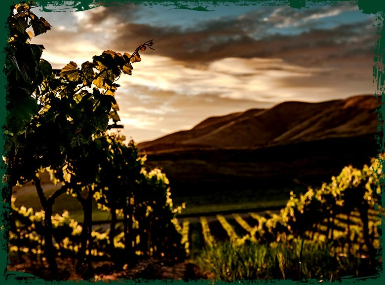
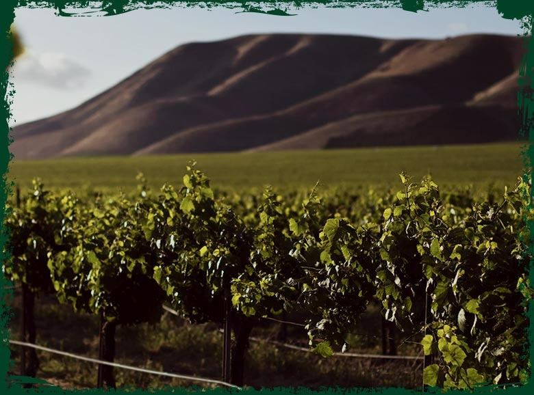
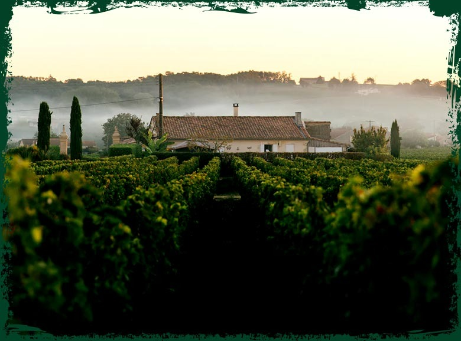
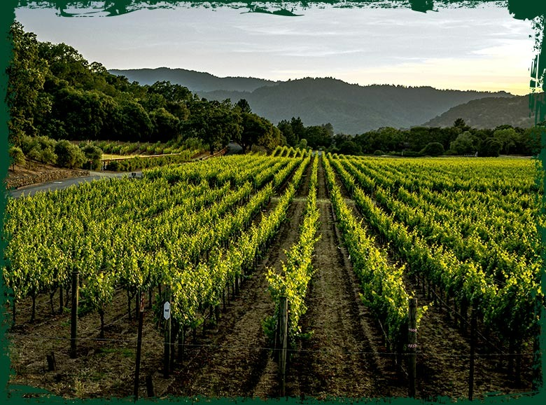

OUR FACILITIES
OUR VINEYARDS AND GRAPES
QUISQUE LOREM
Experience the pinnacle of coir processing technology. Our facilities are equipped with state-of-the-art machinery that ensures consistent quality and maximum output for global markets.
We pride ourselves on our meticulous attention to detail, from the initial raw material selection to the final baling process.
READ MORE
NON FELIS
Sustainability is at the heart of our operations. Our eco-friendly processing units minimize waste and water consumption, adhering to the highest environmental standards.
Our skilled workforce operates in a safe and empowering environment, ensuring that every product carries the mark of excellence.
READ MORE
CUBILIA CURAE
Precision milling and advanced drying techniques allow us to produce coco peat and fiber with specific parameters, meeting the exact needs of our diverse clientele.
From horticulture to industrial applications, our facilities are designed to handle complex requirements with ease and efficiency.
READ MORE
EROS CURSUS
Quality control is integrated into every stage of production. Our on-site laboratory conducts rigorous testing to guarantee pH, EC, and moisture levels.
We are committed to continuous improvement, constantly upgrading our facilities to stay at the forefront of the coir industry.
READ MORE
0
Processing Units
Strategically located across the island for optimal sourcing.
0
Expert Staff
Highly skilled professionals dedicated to quality and innovation.
0
Global Clients
Trusted partners in more than 40 countries worldwide.
0
Tons Per Year
Significant production capacity ensuring reliable supply chains.

ABOUT US
THE CLUB FOR CONNOISSEURS
Join our exclusive network of professional growers and industrial partners. Gain access to premium-grade coir solutions and expert technical support tailored to your specific needs.
JOIN NOW